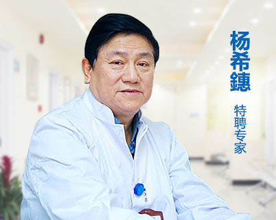

张小姐(27岁)
发病史：6 年
恢复阶段：术后7天
淤血消失，切口皮肤生长期
术前检查
对局部麻醉进行药物皮试，仔细询问是否有糖尿病、血液病、高血压等病史。
我院会为患者详细介绍说明手术无风险、无痛、无疤痕等，为患者建立一个良好的心态，并在术前术中术后保持与患者的沟通交流，使患者保持一个轻松愉悦的心态。
手术时间严格遵照外科手术规范，如女性经期不进行手术，术前详细询问患者近期用药情况等，以确保手术安全进行。
术中保障
-
独立应急电力系统
我院以患者的安全为重要使命，在综合考虑和模拟各种情况后，斥巨资建造了独立应急发电系统，以应对突发的紧急停电状况保证不耽误治疗，杜绝手术因突发停电而带来不必要的损害。
-
德国千层流无菌手术室
我院采用德国千层流无菌手术室，独特的空气洁净技术对微生物污染采取程度不同的控制，并提供适宜的温、湿度；手术区内空气压力将根据不同区域的需求调整变化，每升空气中≥0.5μm的尘粒数不超过35颗；空气洁净度可以到达99.98%。
-
麻醉保障
从手术前一天开始，麻醉医师已在为你的祛臭之旅安全护航。我院麻醉师从事麻醉多年，通过严格考核，能够极好的运用到腋臭手术临床, 麻醉医师全程监护手术过程，并通过多种方式减去患者心理压力。
术后保障
-
手术当天
术后护士处理好伤口，切记双臂不可抬高于肩膀之上，避免手臂外展的动作避免剧烈运动过量排汗。
-

术后四天
术后第4天来我院进行免费复查，医生根据患者伤口恢复情况给予建议。让患者放心、安心。
-
术后饮食
患者在手术后1周内尽量禁烟，禁食辛辣刺激食品。
-
术后保障
患者可与我院签约治疗，终身全方位保证患者权益。个别患者因为体质特殊问题有轻微的复发情况，我们可以提供免费再次治疗。
专家保障
-
擅长领域
腋臭手术，显微外科。皮肤缺损修复，整形再造，激光医疗应用。
上海江城皮肤病医院专家组成员，皮肤外科主任，毕业于同济医科大学。拥有丰富的皮肤外科临床经验，精于外科手术及技巧，如整形外科的手术技巧、微创外科的手术操作等，多次承担或参与皮肤科重点科研课题研究工作，攻坚克难，为我院积累了大量有效的临床治疗方案。
点击咨询
- 
-
擅长领域
腋臭手术 皮肤外科 疤痕修复 皮肤微整形 激光美容
上海江城皮肤病医院特聘专家，主任医师、教授，毕业于上海第二医学院，有着丰富的临床诊疗工作经验，多次承担或参与皮肤病重点科研课题研究工作，在各大医学周刊上多次发表过重要学术论文。"卫生部技术进步乙等奖"，"上海市教卫科技进步二等奖"，"全国皮肤美容学术研讨会优秀论文二等奖"获得者。
点击咨询
案例分享
-
-

曹先生(27岁)
发病史：2 年
恢复阶段：术后2天
切口愈合 淤血消融期 -

陈小姐(24岁)
发病史：3 年
恢复阶段：术后3天
切口愈合 淤血消融末期 -
吴小姐(28岁)
发病史：8年
恢复阶段：术后7天
淤血消失，切口皮肤生长期 -

刘小姐(25岁)
发病史：4年
恢复阶段：术后6天
切口愈合 皮肤生长末期 -

陈小姐(27岁)
发病史：5年
恢复阶段：术后7天
切口愈合，淤血消失 -
林先生(23岁)
发病史：4年
恢复阶段：术后6天
淤血消失，切口皮肤生长期 -

周小姐(30岁)
发病史：9年
恢复阶段：术后7天
淤血消失，切口皮肤生长期